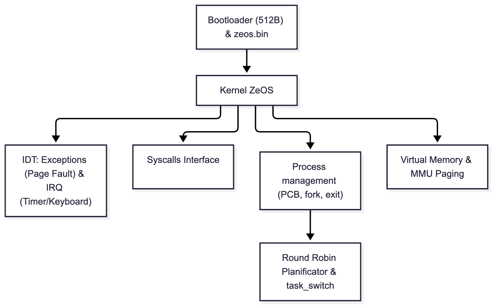
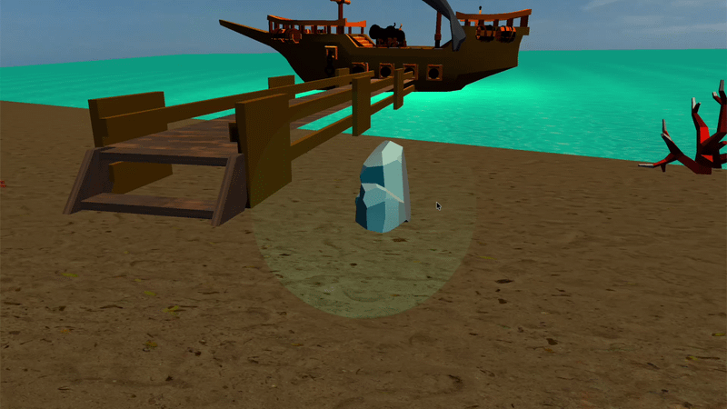
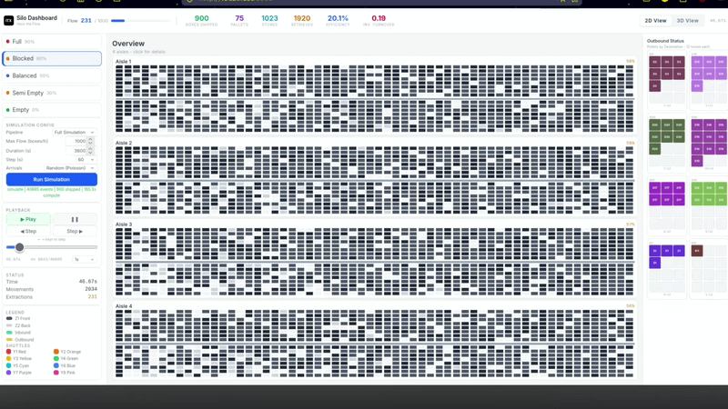
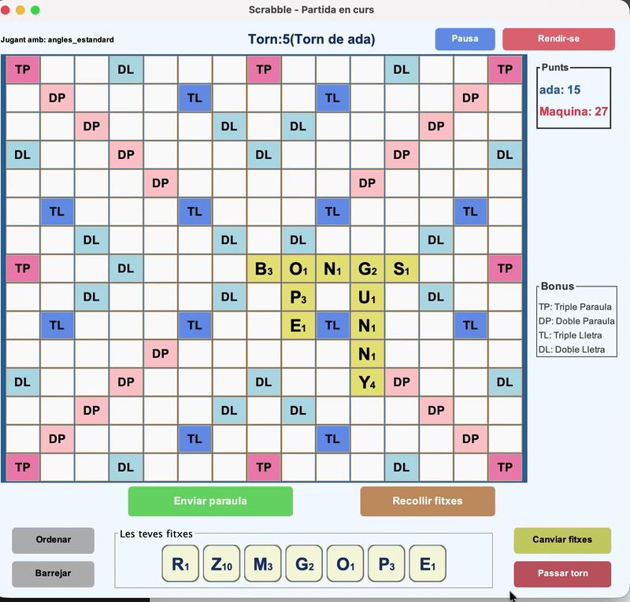
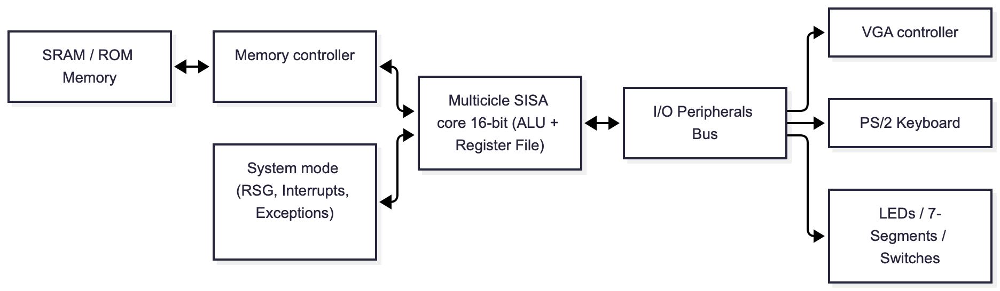
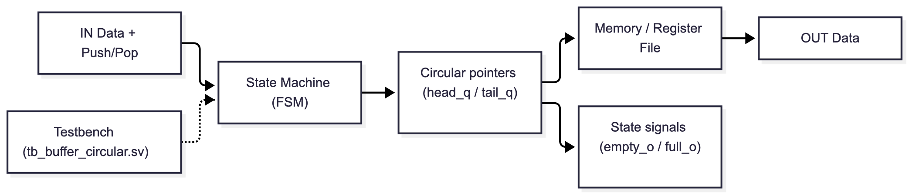
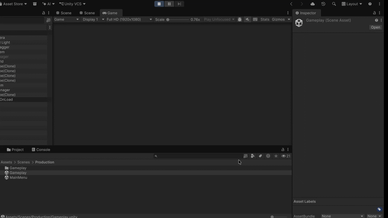
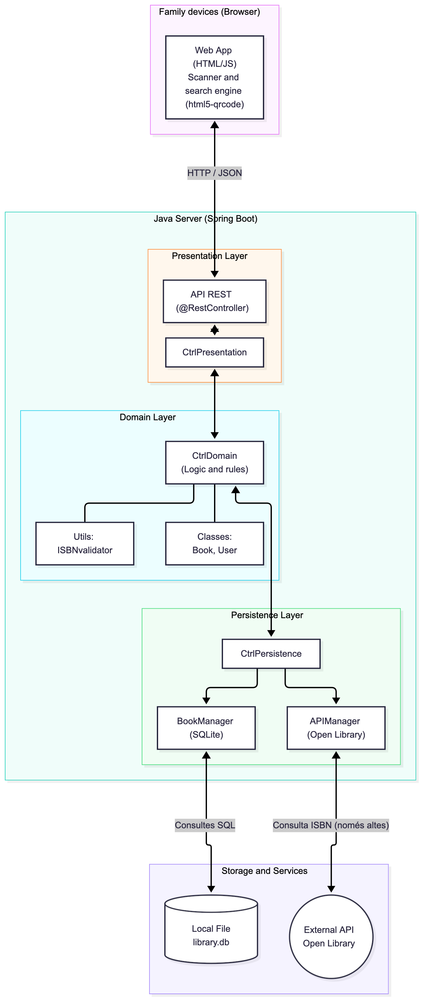

Connecting low-level computer engineering
with real-time interactive development in the gaming sector.
I am a final-year BEng Computer Engineering student at Facultat d'Informàtica de Barcelona (FIB – UPC), currently on an Erasmus+ exchange semester focused on Game Development at Coventry University (UK).
My background combines low-level systems programming—such as building an OS kernel from scratch or designing FPGA hardware—with agile game development in Unity, C#, and GLSL. Graduating in 2027 and open to on-site opportunities in the UK.
Featured Projects

ZeOS Operating System Kernel
C, x86 Assembly, Linux
Engineered a functional OS kernel from scratch on Linux, implementing process scheduling, virtual memory management, and system calls. Diagnosed complex low-level memory and execution bugs.

GLSL Graphics Scene
C++, GLSL
Developed an interactive 3D graphics application, containing a coastal environment, including animated and interactive objects, during my stay at Coventry University.

Warehouse Optimisation System (HackUPC Winner)
Python, HTML
Built a real-time inventory distribution and visualisation tool within 36 hours in a cross-functional team, troubleshooting critical integration issues under tight deadlines.

Scrabble
Java, Unit Testing
Implemented a Scrabble game in Java, validated through automated unit tests.

FPGA System-on-Chip
VHDL, FPGA
Designed a custom FPGA SoC applying hardware performance analysis and parallelism optimisation.

Hardware Verification (e.g. circular buffer)
SystemVerilog, Verilator
Automated logic verification using Verilator test benches to catch edge-case defects early when implementing low-level components.
Technical Skills & Languages
Programming & Systems
- Core: C++ (Advanced), C, Desktop Linux, x86 Assembly
- Game Dev & Graphics: Unity, C#, GLSL
- Hardware & Web: SystemVerilog, VHDL, Java, SQL, HTML
- Tools & QA: Verilator (Test Benches), Unit Testing, Git, ModelSim
Languages
- Catalan: Native (C2 Certification)
- Spanish: Native
- English: Fluent (C1 Certification, UK University Study)
- Italian: Advanced (Written & Spoken)
- French: Beginner (Written & Spoken)
Currently working on...

Game Prototypes & Innovative technologies
Unity, C#, AR/VR
Currently developing interactive 2D/3D game prototype in an agile English-speaking team to raise awareness on generativeAI effects on society and the planet.
Also experimenting with AR and VR technologies at Coventry University.

Our Own Library
Java
A personal project born from my family's passion for reading, aimed at centralising, documenting and organising our book collection within a dedicated digital space. The tool will allow the cataloging of both physical and digital copies, the structuring of bibliographic metadata and the facilitation of searching and tracking the books read by family members.
Get In Touch
I am currently looking for graduate software engineering and game development opportunities starting in 2027. Feel free to reach out via email or connect with me on GitHub and LinkedIn.